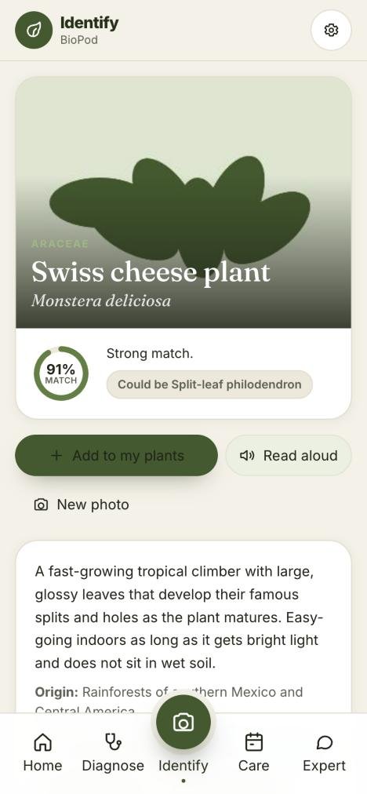
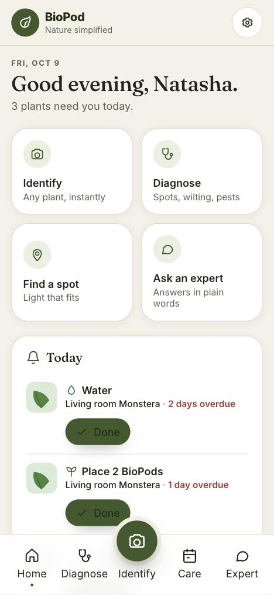
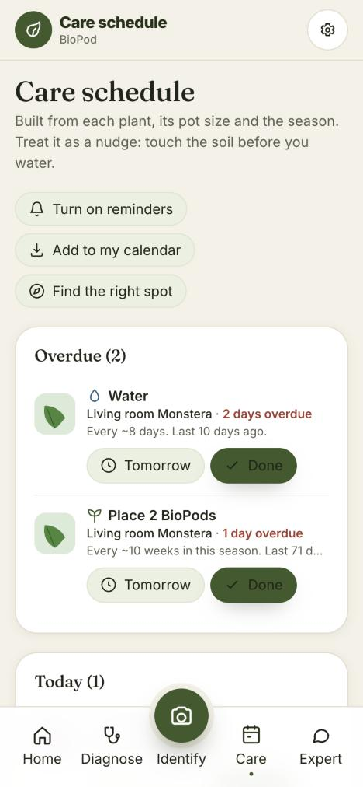

Feed it in three seconds. Know what it needs, always.
One pod feeds a potted plant for 4 to 6 weeks. No measuring, no mixing, no plastic. The free app tells you when the next pod is due.


Be first to try BioPod
Join the waitlist and we will email you when it is ready. That is it.
Feed it right. Keep it alive.

Organic plant food in a cellulose shell
Drop one in, water as normal. The shell dissolves in 30 to 90 seconds and the compartments inside release in stages, feeding the roots for 4 to 6 weeks. Nothing is left in the soil.
- Pre-measured, dosed by plant size
- Soil microbes, sea kelp, humic acid, plant proteins, balanced nutrients
- No synthetic fertilizers, no plastic

Identify, diagnose, schedule
Point your camera at any plant. The app names it, writes its care guide, spots pests and disease, and reminds you when to water and when the next pod is due.
- Works in your phone's browser, free
- Your plants and photos stay on your device
- Honest about what it cannot fix
Three steps. No mess. No measuring.
Place a pod
One pod per plant, pushed just under the soil near the roots. Nothing to scoop, weigh or dilute.

Water as normal
The cellulose shell dissolves in 30 to 90 seconds, right where the roots are.

Forget it for a month or so
Compartments inside release in stages, so a pod feeds for 4 to 6 weeks: about six for a small plant, five for a medium one, and a large plant takes two pods every four weeks. The app reminds you when the next pod is due.
Everything the fertilizer aisle gets wrong, fixed in one pod

Pre-measured, nothing to guess
Measuring cups, dosing caps and ratios written for people managing acres are how plants get burnt, or never get fed at all. A pod is one dose, every time.
plastic left in your soil
A cellulose shell and a paper pouch. The bottle and the coated beads are what we replaced.
weeks per pod
Feed, then forget it until the app reminds you.
What is inside
Organic inputs, no synthetic fertilizers. Beneficial soil microbes, the bacteria and fungi of healthy soil. Sea kelp and humic acid, two of the oldest soil amendments there are. Plant proteins for slow-release nitrogen, a balanced blend of nitrogen, phosphorus and potassium, and the essential micronutrients plants need in small amounts, including calcium. What each one does.
Built by a scientist
BioPod was founded by an environmental scientist who got tired of plastic bottles of mostly water. Her story.
Free. In your browser. Honest.
No download, no account. Open it in Safari or Chrome, add it to your home screen, and it opens like any app. Your plants and photos stay on your phone.
Answers come from an AI plant expert and can be wrong. The app says so, and tells you when a problem is not a feeding problem.

Good to know
Be first in line
Join the free waitlist and hear the moment BioPod is ready.